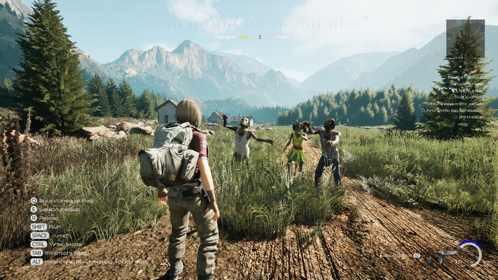
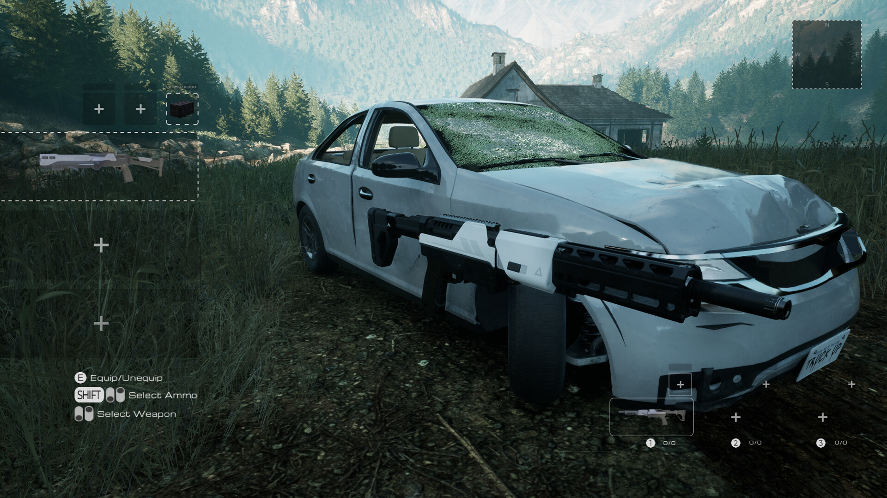
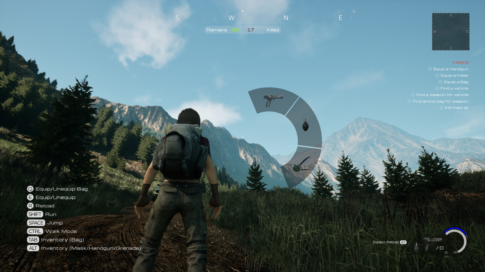
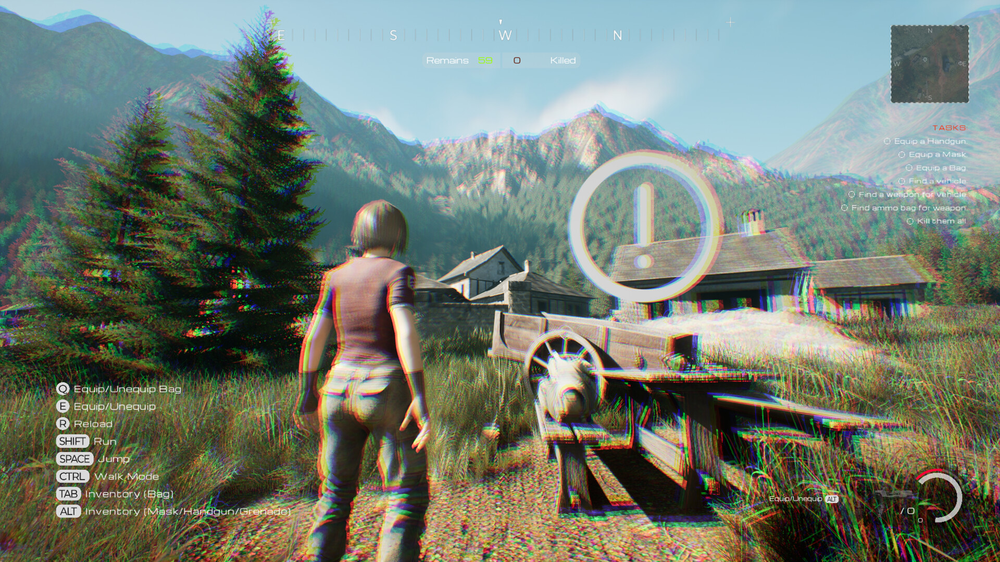
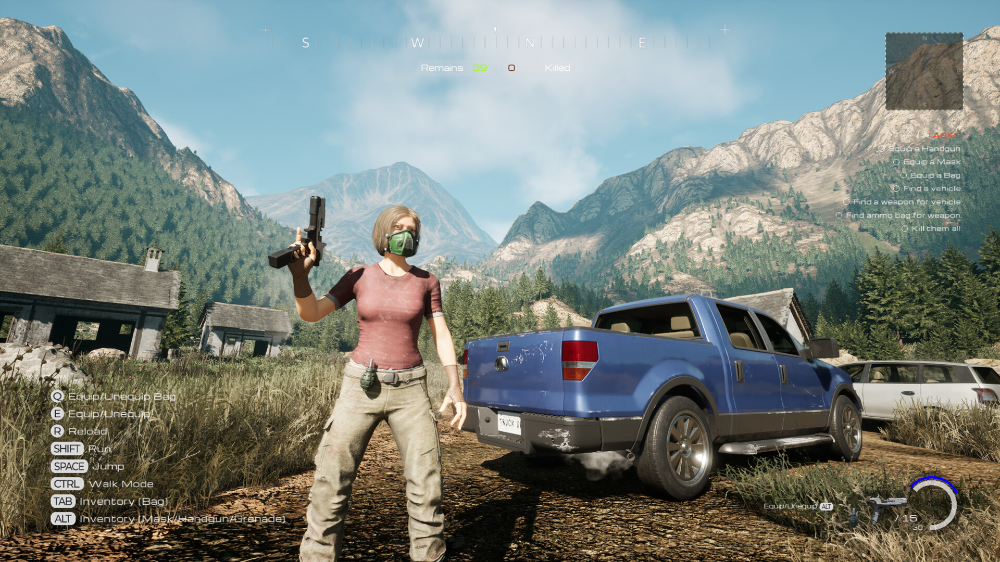
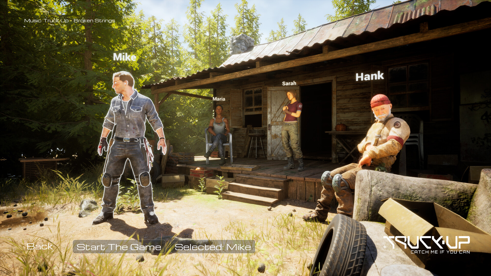

Truck Up: Catch Me If You Can
Kıyamet sonrası bir dünyada silahlı araçlarla kasaba savunması veya zombi ordusuyla şehirlerde kaos yaratma aksiyonu.

Çok oyunculu araç simülasyonlarında eğlence, ağ senkronizasyonunun akıcılığıyla doğar.
Truck Up: Catch Me If You Can projesinde oyuncular iki zıt rolde karşılaşır: Kıyamet sonrası dünyada silah donanımlı ağır araçlarla kasabalarını zombi sürülerinden koruyan savunucular veya zombi ordusunu komuta ederek şehirlerde kaos estiren saldırganlar.
Bu asimetrik yapıyı ve fizik tabanlı araç simülasyonlarını çok oyunculu (multiplayer) bir ağ ortamında gecikmesiz (lag-free) senkronize etmek ciddi bir teknik meydan okumadır. Araç fizikleri, mermi kovanları ve zombi sürüsü sunucu tarafında yüksek frekansta doğrulanır.

Chaos Vehicle & Silah Donanımı
Unreal Engine 5 Chaos Vehicles sistemini özelleştirerek ağır araç süspansiyonları, arazi tutunması ve araç üzerine monte edilen ağır silah sistemlerini C++ ile geliştirdim.

Gerçek Zamanlı Asimetrik Co-op / PvP
Server-authoritative (sunucu yetkili) ağ yapısı kurgulayarak eşzamanlı aksiyon anlarında fizik çakışmalarını ve ağ gecikmelerini minimize ettim.
Ağ Senkronizasyonu (Replication)
Araç konum, hız ve ivme verileri sıkıştırılmış quantization algoritmaları ile paketlenerek sunucu-istemci bant genişliği %40 oranında düşürüldü.
İstemci Tahminleme (Client Prediction)
Yüksek ping durumlarında oyuncu girdilerini yerel olarak işleyen ve sunucu doğrulaması geldiğinde kesintisiz düzelten tahminleme algoritmaları uygulandı.
Sürü Yapay Zekâsı (Zombie Swarm AI)
Yüzlerce zombi aktörünün performans kaybı yaratmadan sunucu üzerinde yönlendirilmesini sağlayan kütle AI sistemleri kurgulandı.
Fizik Verisi Asla İstemciye Güvenmez
İstemci tarafında hesaplanan fizik hareketlerinin hileye ve uyumsuzluğa yol açtığını; sunucu doğrulamalı deterministic fizik döngülerinin şart olduğunu öğrendim.
Her Ağ Paketi Bütçe Demektir
Gereksiz her RPC çağrısının ağ trafiğinde darboğaz yarattığını; verileri paketleyip delta güncellemeleri ile göndermenin hayati olduğunu tecrübe ettim.
Asimetrik Oyunlarda Kaos Yönetilmelidir
Araç savunanlar ile zombi yönlendirenler arasındaki güç dengesinin ince matematiksel hesaplamalarla sürekli test edilmesi gerektiğini gördüm.


